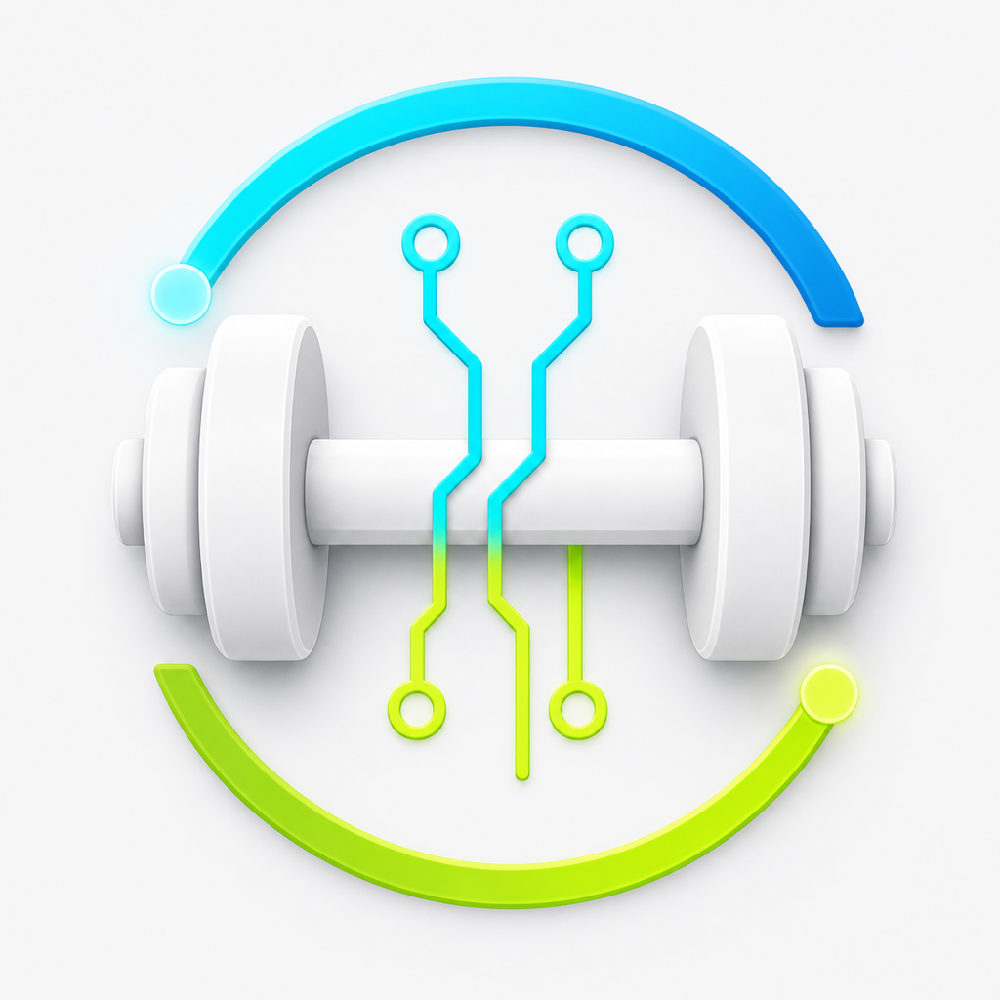

Fitness and nutrition log
Body Ops
筋トレと食事をまとめて記録し、AIのアドバイスにつなげるフィットネス記録アプリです。
できること
筋トレの種目、重量、回数、セット数を記録
食事内容、カロリー、PFCを記録
体重、目標、履歴をまとめて振り返り
APIキーを設定すると、記録をもとにAIアドバイスを利用可能
APIキーなしでも通常の記録機能は利用可能
サポート
プライバシーポリシー